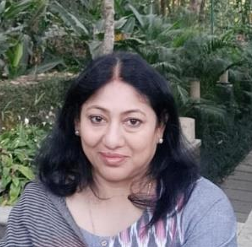

- Immunology
- Genetics and Microbial Genetics
- Virology
- Medical Microbiology
- Microbial Ecology
- Bioinformatics
- Microbial Diversity and Scope of Microbiology

Prof. Vandana Gupta
Professor, Department of Microbiology

Contact Details
-
Address
- Department of Microbiology, Ram Lal Anand College, University of Delhi, New Delhi 110021
-
Phone
- Office: 011-24112557
-
Email
-
Research Profiles
- Google Scholar
- ResearchGate
- Orcid Id: 0000-0003-4785-5615
- Scopus ID: 57207396291
- Researcher ID: AAT-7491-2020
- Vidwan-ID: 289034
Education
Career Profile
- Ph.D. in Microbiology Department of Microbiology, University of Delhi 1993-1999
- M.Sc. in Microbiology Department of Microbiology, University of Delhi 1991-1993
- B.Sc (Hons) in Microbiology Swami Shraddhanand College, University of Delhi 1988-1991
- Post Doctoral Fellowship Genetic Immunotherapy Lab, Division of John Hopkins in Singapore 2002-2005
- Professor (since 2020) - Department of Microbiology, Ram Lal Anand College
- Associate Professor (2010-2020) - Department of Microbiology, Ram Lal Anand College
- Reader (2005-2010) - Department of Microbiology, Ram Lal Anand College
- Lecturer in Senior Scale (2001-2005) - Department of Microbiology, Ram Lal Anand College
- Lecturer (1998-2001) - Department of Microbiology, Ram Lal Anand College
Education
Career Profile
Subjects Taught
Research Projects
- 2023-2024: "Repurposing drugs against MRSA" - College Research Grant (Rs. 1,00,000)
- 2020-2022: "Combating MRSA: Drug Repurposing Approach" - College Research Grant (Rs. 50,000)
- 2013-2015: "Virtual Screening of Hepatitis C Virus Inhibitors" - University of Delhi Innovation Project (6 lakhs)
- 2015-2016: "Antibiotic Resistance in Airborne Bacteria" - University of Delhi Innovation Project (5.5 lakhs)
- 2012-2013: "Groundwater Delineation & Potable Quality Assessment" - University of Delhi Innovation Project (10 lakhs)
- Multiple ICMR and SERB proposals submitted - Under review
- Virtual Screening of Novel Inhibitors Against MRSA (2019)
- E. coli Gyrase, Drug Repurposing Approach (2020)
- SARS-CoV-2 3CLpro, In-silico Drug Repurposing (2021)
- Summer Training Students: 3 - M.Sc. Bioinformatics from Maharishi Dayanand University
- B.Sc (Hons) Microbiology Students: 10+ - Under College Research Grant Scheme and other projects
- Mentored multiple students for research projects and scientific writing
Research Experience
- Post Doctoral Research Fellow - Genetic Immunotherapy Lab, Division of John Hopkins, Singapore (2002–2005)
Research Guidance
- M.Sc Biotechnology Dissertations (MRSA, Drug Repurposing)
- M.Sc Microbiology Projects (SARS-CoV-2 studies)
- Guided 30+ B.Sc (Hons) Microbiology students
- Mentored summer trainees (Bioinformatics)
Conference Organization & Presentations
- FDP: “Essential Skills for Genomics” (4–11 Aug 2023)
- Seminar: Financial Independence (24 Mar 2023)
- Webinar: Intellectual Property Rights (17 Feb 2023)
- Health Camp with Action Cancer Hospital (Jan 2023)
- Workshop: Basic Microbiology Techniques (Dec 2022)
- Cancer Awareness Seminar (Jan 2023)
- Self-defense Workshop (Delhi Police, Oct 2022)
- International Seminar on Life Sciences (2025) – Best Paper Award
- Paper: Post COVID-19 Cardiovascular Effects (2025)
- Longevity Asia Symposium – Invited Talk (2024)
- Chairperson – Technical Session (2024)
- International Conference Int-BIONANO (2024)
- COVID-19 International Conference (Zimbabwe, 2021)
- 12+ International presentations on SARS-CoV-2 research
- Conference on Sustainable Development (2025, Vigyan Bhawan)
- National Conference on Health & Environment (2025)
- DU Innovation Project Presentations (2013–2015)
- AMI Conference (2015)
- Microbiology Symposiums across India
- Gut Microbiome and Aging (2024)
- Drug Repurposing & Bioinformatics (2020)
- SARS-CoV-2 Proteases (2021)
- Molecular Docking Workshops
- Science Writing & Research Ethics (2020)
- Molecular Docking studies on SARS-CoV-2 proteins
- RNA Polymerase targeting studies
- Spike glycoprotein inhibitor research
- NSP protein inhibitor studies
Events Organized
International Conferences & Presentations
National Conferences
Invited Talks & Resource Person
International Presentations (COVID-19 Research)
Area of interest
Administrative Assignments
Areas of Interest / Specialization
- Bioinformatics
- Virtual Screening & Drug Repurposing
- SARS-CoV-2 & COVID-19
- Vaccine Development
- Antimicrobial Resistance
- Ectomycorrhizal Fungi
Administrative Assignments (Current)
- Convener: Workload and Academic Affairs Committee
- Nodal Officer: Examinations (May 2021 onwards)
- Coordinator: Research and IPR Cell
- Member Secretary: Institutional Ethics Committee
- Convener: Department Admission Committee
- Member: Solid Waste Management Committee
- Coordinator: COVID Task Force
Publications Profile
- Singh G et al. (2026). Biological activity and safety assessment of MMDB. The Microbe (Elsevier)
- Singh G et al. (2025). Drug repurposing approach for malaria treatment. In Silico Research in Biomedicine
- Singh G et al. (2024). Anti-microbial resistance study using natural compounds. Biochemistry Reports
- Agarwal S et al. (2024). Air pollution and microbiome diseases. Future Microbiology
- Ahmed Md H et al. (2024). Chikungunya antiviral drug design. Chemical Physics Impact
- Ahmed Md H et al. (2024). Mpox vaccine design. Journal of Biomolecular Structure
- Bhat S et al. (2023). Mpox outbreak review. Journal of Medical Microbiology
- Gupta I et al. (2023). Mucormycosis review. Future Microbiology
- Kapoor S et al. (2023). SARS-CoV-2 RNA polymerase study. Physics & Chemistry of Earth
- Shahanshah MFH et al. (2022). SARS-CoV-2 nucleocapsid inhibitors
- Gupta V (2022). COVID-19 molecular diagnostics
- Dwivedi V et al. (2022). HCV inhibitor repurposing
- Singh G et al. (2022). MRSA drug design study
- Sharma B et al. (2021). COVID-19 diagnosis review
- Singh A & Gupta V (2021). SARS-CoV-2 therapeutics
- Kaur SP & Gupta V (2020). COVID-19 vaccine research
- Dashora V et al. (2020). Groundwater microbiology study
- Nandi I et al. (2019). Chikungunya virus protein study
- Agarwal G et al. (2019). Viral inhibitor screening
- Ghildiyal R et al. (2019). Chikungunya polymerase research
- + 30+ total international publications (SCOPUS indexed, IF journals)
- Groundwater microbiology studies (Delhi region)
- Environmental microbiology research papers
- Microbial biotechnology publications in Indian journals
- Proceedings in national microbiology conferences
- Total Publications: 30+ Research Papers, 24+ Book Chapters
International Publications
National Publications
Patents
- Patent Granted: Method of screening inhibitors against Hepatitis C virus (Granted: 20 Jan 2023)
Chapters in Books & E-books
- Microbial Secondary Metabolites (Taylor & Francis)
- Heavy Metal Bioremediation (Springer)
- CRISPR & Genome Editing (Elsevier)
- COVID-19 Clinical Guide (Wiley)
- Soil Microbiology & Sustainability
Awards and Distinctions
- International Distinguished Women Scientist Award (2021) - Center for Professional Advancement, Andhra Pradesh
- Post-Doctoral Fellowship (2002-2005) - Division of John Hopkins, Singapore
- Gold Medal (M.Sc.) - Standing First in Delhi University
- Third Position (B.Sc.) - Delhi University (Microbiology Honours)
- All India Post Graduate Fellowship - M.Sc. Level
- UGC NET Qualified - National Eligibility Test
- h-index: 10, i10-index: 10 - With 1100+ citations
Association with Professional Bodies
- Life Member – Microbiologist Society of India
- Life Member – Association of Microbiologists of India
- Member – International Association of Medical & Pharmaceutical Virologists
Other Activities & Community Service
- Reviewer: 25+ peer-reviewed journals (BMJ, PLoS, Future Virology, Chest, Archives Virology, etc.)
- Life Member: Association of Microbiologists of India
- Life Member: International Association of Medical and Pharmaceutical Virologists
- Social Outreach: "UDISHA: A New Dawn" - Online HPV Vaccination Awareness Campaign (Feb 2021 onwards)
- Gender Sensitization: Active in women empowerment initiatives
- Multiple Training Workshops: Conducted at international and national levels (2015-2023)
- Faculty Deve